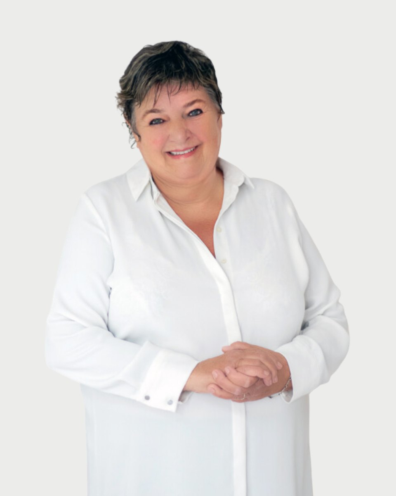

Regiszter 12 · Klinikai szakpszichológus
Gellért
Csilla

Amiben segítek
- Hangulatzavarok
- Alvászavar
- Traumafeldolgozás, veszteségélmények (válás, halál, stb.)
- Szorongásos panaszok
- Pániktünetek
- Poszttraumás stressz
- Életvezetési problémák
- Különböző szerep-bizonytalanságok (szülő, házastárs, vezető)
A helyzet reménytelen, de nem súlyos", Paul Watzlawick
Rólam
Távolságtartással nem lehet megismerni valakit. A megismeréshez közel kell engedni a másik embert.
Gellért Csilla díja 18-25 ezer forint alkalmanként.
Képzés és szakmai út
A képzések és a szupervízió az akkreditált szakképzőhely rendjében folynak. Mit jelent ez Önnek
Tanulmányok
• 1974-1978 Gyógypedagógiai Tanárképző Főiskola, Budapest
gyógypedagógus (oligrofénpedagógus-pszichopedagógus)
• 1988-1992 ELTE BTK, Budapest
pszichológus
• 1994-1995 Haynal Imre Orvostovábbképző Egyetem, Budapest
klinikai felnőtt szakpszichológus
• 1999-2001 OPNI Tündérhegyi Pszichoterápiás Képzés, Budapest
pszichoterapeuta képzés klinikai fázis
• 2001 Egészségügyi Felsőfokú Szakirányú Szakképző és Továbbképző, Budapest
igazságügyi klinikai pszichológus
• Integratív Pszichoterápiás Egyesület
integratív hipnoterapeuta módszerspecifikus képzés
Tanúsítványok
• pszichodráma önismereti csoportterápiás képzés (150 óra)- 1978
Králné Szabó Piroska
• gesztusterápia- elméleti és gyakorlati szeminárium (80 óra)- 1976
Králné Szabó Piroska
• személyiségfejlesztő sajátélményű önismereti terápia (200 óra)- 1993
• Láng Iringó
• pszichoterapeuta képzés módszerspecifikus fázis sajátélmény rész (362 óra)- 2001
• Virág Teréz
• szupervízió (56 óra)- 2000
• Virág Teréz
• technikai szeminárium- 2002
• Mészáros Judit
• coach- 2011
Szakmai tapasztalatok
• Utánképzési foglalkozásvezető 1992
• Igazságügyi szakértés 1996
• KÚT Alapítvány: klinikai pszichológus, egyéni terápia 1995-2001
• SZOMA: munkanélküliek esélynövelő tréningje
• SAMLING: szolgáltatás, önismeret, kommunikáció, időgazdálkodás, stresszkezelés, csapatépítés- tréning
• Homo Regius-tréning
• Agora Oktatási Intézet, tréning
• Magánrendelés:klinikai pszichológus, egyéni terápia
• ELMŰ, coach 2017-2019
Tagságok
Magyar Pszichológiai társaság
Magyar Orvosi Kamara
Igazságügyi szakértői Kamara
Tanítómesterek
Akiknél a módszereket tanulta
- Virág Teréz pszichoanalitikus
- Szakács Ferenc klinikai szakpszichológus, egyetemi docens
- Daubner Béla pszichiáter, kiképző pszichodráma pszichoterapeuta
- végül, de nem utolsó sorban klienseim
Rólam mondták
Kliensek visszajelzései, a hozzájárulásukkal
Nagyon szerettem és vártam a heti találkozónkat, - bár az elején kétkedéssel fogadtam a rengeteg kérdést és hogy mit, hogyan és főleg mikor fog nekem a Csilla segíteni, végül, amikor kb. 8 hónap után azt mondta, hogy nem kell többet jönnöm, jól vagyok, teljesen kétségbeestem, hogy nehogy magamra hagyjon, én jönni akarok. Szerettem, hogy mindig mindent odafigyeléssel hallgat, a legnagyobb hülyeségnek tűnő dolgot is komolyan veszi, és mindig fel tud tenni olyan kérdést, amire nem is gondoltam, sokszor más megvilágításba helyezi a történéseket, mint ahogy én elsőre logikusan gondolnám, érzékelném. Nagyon bele tudja élni magát a helyzetekbe, függetlenül a történések jellegétől és a sok kérdéssel végülis tényleg én mondom ki, oldom meg, értékelem át, ami gondot okozott. Mindig tudott valami olyat mondani, ami pont passzolt oda, sokszor a legszomorúbb helyzetekben is megnevettetett a hozzáállásával. Ami szintén nagyon tetszett a Csillában, hogy mindenre nyitott és nincs előítélete, kortól, helyzettől függetlenül jól áll az élethez és egyfajta nyugalmat sugároz, magabiztosságot ad az embernek.
Csilla nekem abban segített, hogy ne a problémáimon agyaljak, hanem tegyek valamit a megoldásért. Rávezetett, hogy semmi értelme azon töprengeni, pláne dühöngeni, hogy mit rontottam el 10, 20 vagy 30 éve, azzal kell foglalkozni, hogy hogyan juthatok előre a MAI helyzetből. Előtte pszichológust csak amerikai filmekben láttam, nem is hittem abban, hogy működhet a pszichoterápia, de a tapasztalat meggyőzött. Nem adott megoldást minden problémámra, de megmutatta az utat, és önbizalmat adott arra, hogy meg tudom oldani a bajaimat, ha nekilátok.
Nincs olyan nap, hogy ne gondolnék jó szívvel Önre. Nagyon gyorsan felismerte a problémáimat, mindig megértően, nagy odafigyeléssel és empátiával hallgatott végig. Tapintatos, mégis teljes körű volt a "feltérképezés". Minden egyes találkozás után egyre jobban éreztem magam, teljesen feltöltődve jöttem el és végül úgy éreztem, visszaadta a szabadságomat! A gyógyszer zökkenőmentes letételét is Önnek köszönhetem.
A pszichológusnő nagy empátiával, megértéssel segít nekem feldolgozni családi problémáimat és megtalálni magamat ebben a számomra nehéz helyzetben. Mindent megtett és megtesz azért, hogy fel tudjam dolgozni a családtagomat ért traumát, megértsem, hogy nem nekem kell megoldani mindent, és hogy megtanuljak magammal is foglalkozni. Mindezt sok türelemmel. Ma is segít továbbhaladni ezen az úton. Jelen van, ha segíteni kell, soha nem engedi el a kezem. Nemcsak kiváló szakember, de nagyszerű ember is.
Időpont Gellért Csillanál
Az ügyfélszolgálat hétköznap 9 és 15 óra között egyeztet. Ha bizonytalan, hogy Ön kihez tartozik, azt is megbeszéljük.
Hasonló területen dolgoznak
Három kolléga, akinek a szakterülete a legközelebb áll Gellért Csilla munkájához.